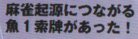
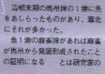
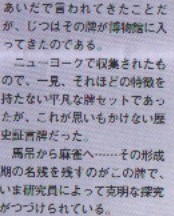
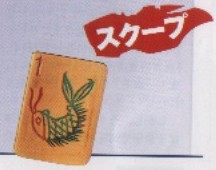
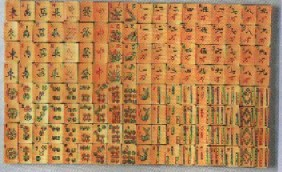

前ページのコラムで、最後に
＞その１索には魚がデザインされていたのではなかろうか？。
＞誰か中国へ行く機会がある人、こんな牌見つけたら、歴史的発見である。
＞ ※北京地方の骨董屋が狙い目か？（＾0＾；
と書いた。
つまり馬弔(マーチャオ)という中国カードが麻雀のメインルーツであり、その馬弔カードの１索には、鳥のほかに魚がモチーフされたものがある。であるなら麻雀の１索にも鳥の他に魚がモチーフされたものがあっても不思議じゃないというのがそのときの話。
もちろん麻雀牌の主産地は中支（上海、蘇州あたり）であるから、そっちで作られた牌に北支系統のデザインである魚が用いられなかった事はよく分かる。しかしいくら魚デザインがマイナーであっても、１セットや２セットは存在していたっていいじゃないか。そしてあるとすれば北京あたりかな、と思った次第。
とはいうものの、とても見つからないだろうと思っていた。ところがなんと、今回、その幻の魚１索牌が発見された！。それも中国ではなく、アメリカのニューヨークで。う〜む、これは盲点だった。
魚デザインは、華北牌の特徴。そこで根が単純なσ(-_-)としては、「北京地方の骨董屋が狙い目か？」と書いた。しかしよく考えてみると、北京地方の骨董屋なんて誰でも目をつける。発見されるものなら、とうの昔に発見されていても不思議ではない。それが無いということは、そんなとこを探していてもダメだったわけ。ではなぜアメリカだったのか。これはもちろん20世紀初頭に生じたアメリカでの麻雀の大ブームの名残りである。
20世紀初頭、中国から伝播した麻雀はアメリカに大ブームを巻き起こした。またたくまにアメリカ全土に流行した麻雀は、イコール、麻雀牌の激しい需要を惹起した。そこで中国各地から何百万ドルもの麻雀牌が輸入された（それでも不足したので、鯨の骨、マンモスの骨などのアメリカ製まで製造されたくらいである）。そんな中国から大量輸入された牌の中に、魚デザインの麻雀牌が混じっていて、それが発見されたというわけである。
麻雀博物館会報創刊号（2001/1/1)





牌そのものは、１索が魚デザインというだけの牌。しかし資料的にはものすごく価値がある。まさに歴史的大発見。この麻雀牌、入手したのは千葉県にある麻雀博物館。いまは博物館の奥の院に鎮座ましましている。う〜む、さすがは麻雀博物館。
|